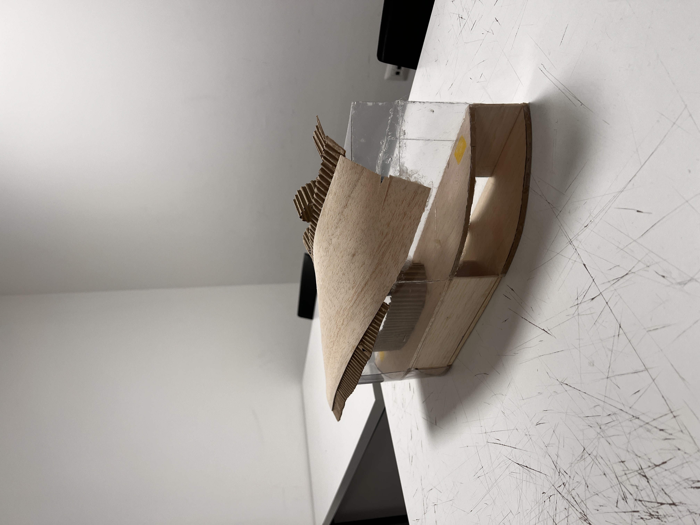
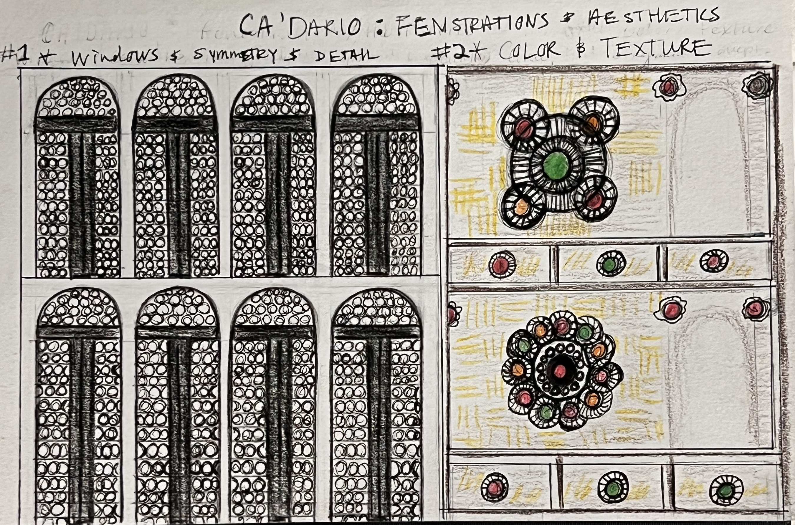
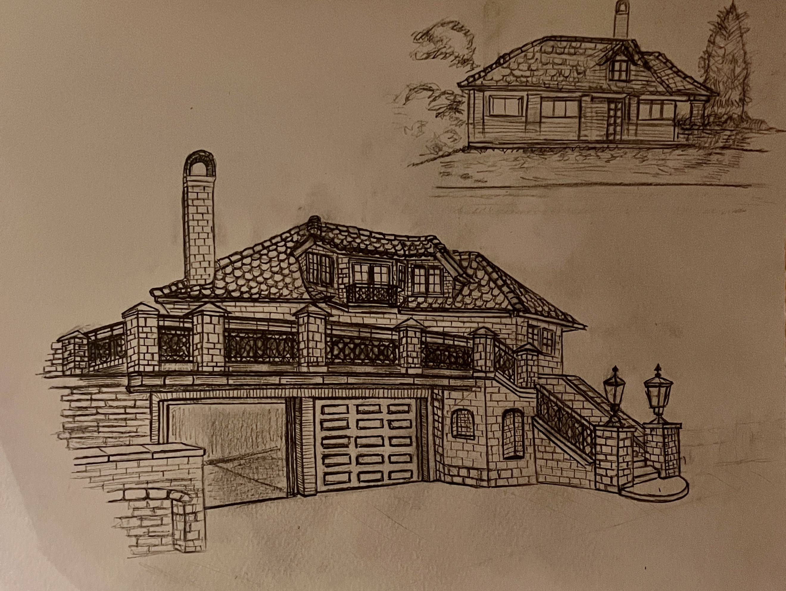

Architecture
All Projects
Studio projects, exhibition work, and observational drawings developed at Boston University and during the BU Venice Academy study abroad, Fall 2025. Work spans pavilion and exhibition building design, residential typology study, structural and fenestration analysis of historic Venetian palazzos, and travel drawings from Barcelona, Oslo, and Venice.

Snøhetta-Inspired Library
A public library designed as a symbolic "set of hands" within the urban fabric. Site plan, section, and interior rendering across three scales: block, building, and room.
View Project →
Venice Exhibition Building
Exhibition space for an art school in Venice. Massing derived from a gondola form, with a sweeping roof and continuous glass walls on the upper level. AutoCAD drawings and physical model.
View Project →
Apartment Residence Study
Analytical study of a Venetian apartment after Vittorio Gregotti. Plan drawings, elevations, and spatial analysis of a historic residential typology.
View Project →
Ca' Pesaro & Ca' Dario Diagrams
Structural diagrams of Ca' Pesaro and fenestration diagrams of Ca' Dario. Close analysis of the building logic of two landmark Grand Canal palazzos.
View Diagrams →
Observational Drawings
Hand drawings made while traveling across Europe. Barcelona Cathedral and an Oslo residence studied for their material character, proportion, and construction logic.
Drawings →